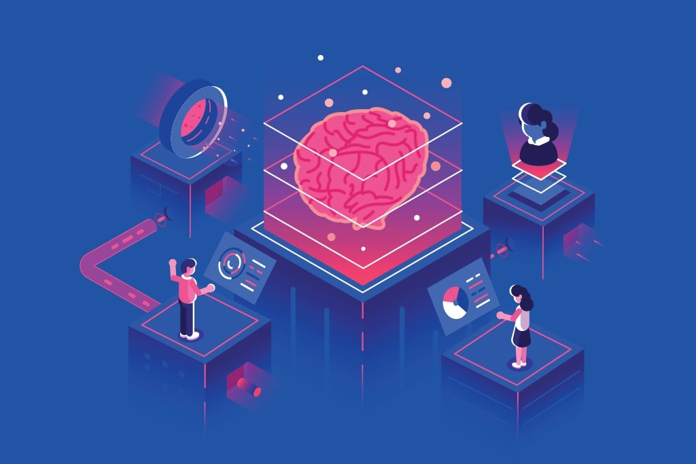

What is Machine learning?
Over the coming years and decades, artificial intelligence (AI) is poised to become a key component of all modern software. There is a threat here, but there is also an opportunity. Both defensive and offensive cyber operations will be enhanced by artificial intelligence. Furthermore, new methods of cyber-attacks will be developed to exploit the specific weaknesses of AI technology. Furthermore, AI will reshape the way we should think about data protection as it ingests large quantities of training data.
To ensure that this era-defining technology brings about broadly shared safety and prosperity, it will be essential to have prudent governance at the global level.
AI and Big Data
AI refers to computational tools that can perform certain tasks in place of human intelligence. Technology is advancing at a breakneck speed, much like the exponential growth experienced by database technology in the late twentieth century. As a result, databases have evolved into the core infrastructure for enterprise-level software. In a similar fashion, most of the new value-added in software over the coming decades is expected to come from AI, at least in part.
Over the last decade, databases have evolved significantly in order to deal with the phenomenon of "big data." This refers to the unprecedented size and scope of modern data sets, which are largely gathered from computers that have come to dominate virtually every aspect of modern life. YouTube, for example, receives over 400 hours of video content each minute.
AI and Cyber Security
It is rare to find a news story about a high-profile data breach or a cyber-attack that costs millions of dollars. It is difficult to estimate cyber losses, but the International Monetary Fund estimates they are in the range of US$100-$250 billion annually for the global financial sector (Lagarde 2012). Additionally, with the pervasiveness of computers, mobile devices, servers, and smart devices, the aggregate threat exposure is growing every day. Although the business and policy communities are still struggling to grasp the implications of cyberspace’s application of AI to cyber security is heralding even greater changes with its newfound importance.
Automating tasks previously performed by humans is one of the essential purposes of AI. The reduction of the labour resources an organisation must employ to complete a project, or the time an individual must spend on routine tasks, allows for significant gains in inefficiency. Customer service chatbots, for instance, can answer questions from customers, and AI-based medical assistants can diagnose diseases based on patients' symptoms.
And the list of applications with AI is never-ending. You also need to know why AI is so important in day-to-day life so that even if you’re coming from a non-technical background, you find AI really fascinating by looking at the amazing applications of AI.
Importance of Machine learning in day to day life:
Machines are one of the greatest fears that man has, the idea that he will be outsmarted and outsmarted by his own creation. While artificial intelligence and machine learning are rapidly transforming our world and driving the Fourth Industrial Revolution, humanity does not have to be concerned.
Job creation
Carolyn Frantz, Microsoft's Corporate Secretary, affirms that artificial intelligence will change the workforce. As many as 133 million new, more engaging, less repetitive roles are expected to be created, despite the bleak picture of AI as a job killer.
Bridging language gaps
AI-powered language tools from Duolingo to Skype are bridging social and cultural divides in our workplaces, classrooms, and daily lives by teaching new languages in a personalised way or translating speech and text in real-time.
Government transformation
With less paperwork, quicker responses, and an efficient bureaucracy - AI has the potential to drastically change public administration, but are governments ready? Both opportunities and risks come with this technology. We need to assess both. Kevin Desouza believes that gamification and role-playing can help public servants analyse complex cases, come up with better solutions, and comprehend the future of autonomous systems.
Providing health care
Artificial intelligence has the potential to make health care "much more accessible and more affordable," says Paul Bates, director of NHS services at Babylon Health.
With an AI-powered chatbot, Babylon, an app that provides symptom checking and fast access to doctors, offers advice to more than one million residents in central London. By using the app, patients can get an accurate, safe, and convenient answer in seconds - and health care providers can save money as well.
Making Art
The nature of art is changing drastically due to computational creativity. Software is increasingly becoming a creative collaborator, combining computer scientists and artists. In the exhibition space, art becomes an expression of science, with the artist as researcher," says Austrian artist Sonja Bäumel.
So don’t you find AI really fascinating by now?
I am sure that you like AI with every passing sentence.
If you want to make a career in AI, then rather than looking here and there and surfing through the Internet, switch to the right platform.